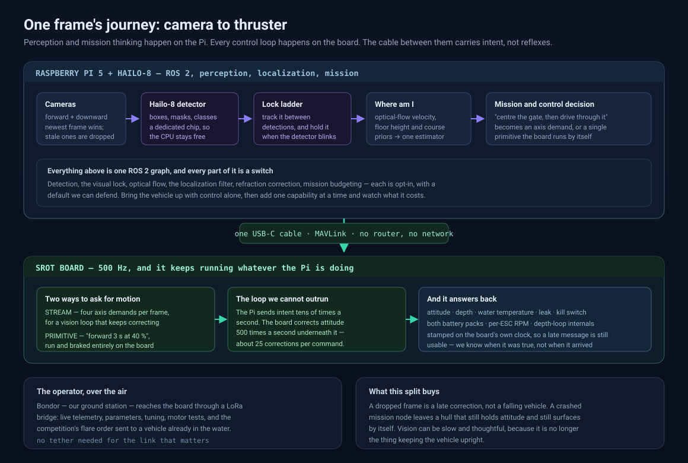
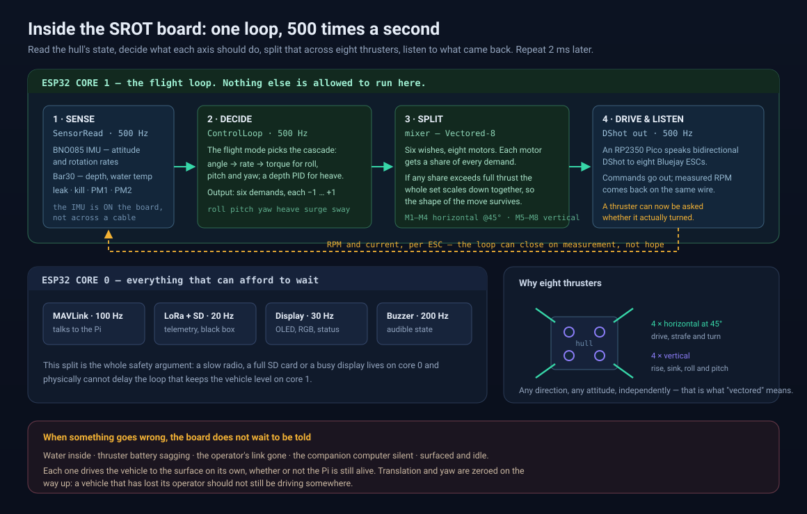
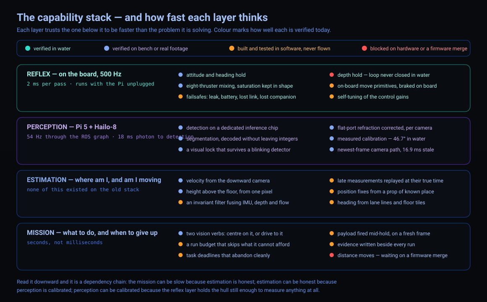
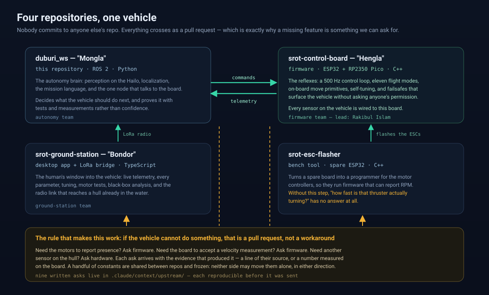

Mongla is the autonomy stack for our underwater vehicles. It runs on hardware our own team designed: the SROT control board, its firmware Hengla, and a Raspberry Pi 5 with a Hailo-8 AI HAT for vision. From the motor controllers to the mission language, there is no layer we cannot read, measure or change.
An underwater robot has to answer two kinds of question. Which way is up, and how deep am I? — hundreds of times a second, because water pushes back. And what is around me, and what should I do about it? — which takes a camera, a neural network, and time. Putting both on one computer means the slow question can delay the fast one. So we split them.

Attitude, depth and thrust, recalculated every 2 ms on a processor core reserved for nothing else. It keeps flying with the Pi unplugged.
Detection on a dedicated inference chip, target tracking, velocity from the floor, the position filter, and the mission itself.
USB-C carrying intent, not reflexes: “strafe a little left”, or a whole primitive the board runs by itself.

An ESP32 with two cores and an RP2350 Pico. Core 1 reads the sensors, runs the control loop and drives the motors. Core 0 handles the link, the radio and the display — so a slow radio or a full SD card physically cannot delay the loop that keeps the vehicle level.

Water bends light, eats red first, and throws moving caustics across the floor. A detector tuned in one pool can fail in another. So the vision stack is not only a neural network: it is a camera path that keeps the newest frame, a lens model measured in water, and a ladder of fallbacks for the moment the detector blinks.
That last number is the one we are proudest of: with no Doppler sonar fitted, the downward camera is the velocity sensor. And when the image cannot support a measurement, it reports nothing at all — never a confident zero.
Every capability we claim carries a file or a measurement, and a state: verified in water, verified on a bench, built but never flown, or blocked. Nothing on this vehicle is in the first category yet, and the map says so.

Nobody commits to anyone else's repository. Everything crosses as a pull request — which is precisely why a missing low-level feature is something we can ask for instead of working around.

| Repository | Codename | What it is |
|---|---|---|
| srot-control-board | Hengla | The firmware: 500 Hz loop, eleven flight modes, on-board move primitives, self-tuning, failsafes. |
| srot-ground-station | Bondor | The operator's window: desktop app plus a LoRa radio bridge — telemetry, parameters, tuning, black-box analysis. |
| srot-esc-flasher | — | Bench tool that reflashes the motor controllers so they can report RPM. |
| duburi_ws | Mongla | This repository: ROS 2 autonomy, perception, localization, the mission language. |
Firmware development team lead: Rakibul Islam — author of the board firmware, the ground station and the ESC flasher.
One node owns the link to the board. Everything else asks that node, over one action.
# bring the vehicle up, with vision ros2 launch duburi_manager bringup.launch.py vision:=true # is it healthy enough to arm? ros2 run duburi_manager bringup_check --srot # watch everything the board sends ros2 run duburi_manager connect --watch # one verb at a time ros2 run duburi_planner duburi arm ros2 run duburi_planner duburi set_depth --target -0.5 ros2 run duburi_planner duburi disarm
def run(duburi, log=None):
duburi.mission_reset()
duburi.use_budget(900, reserve_s=45)
duburi.arm()
duburi.set_depth(-0.8)
with duburi.task('gate', deadline_s=120):
if duburi.vision.align('gate', yaw=0, lat=0, gain=30):
duburi.vision.move('gate', fwd=None) # through it
duburi.surface()
duburi.disarm()
A run can be rationed by its own clock: use_budget() starts on arm, and each
task is asked whether it is still worth attempting — full, fallback, or skip — with the
verdict recorded either way. Because in a timed competition, effort is not points.
Why the architecture looks like this, from first principles — no robotics background assumed.
Every capability, what the old stack could do, and how each claim was verified.
Every shipped threshold with the measurement that justifies it — including the ones we retracted.